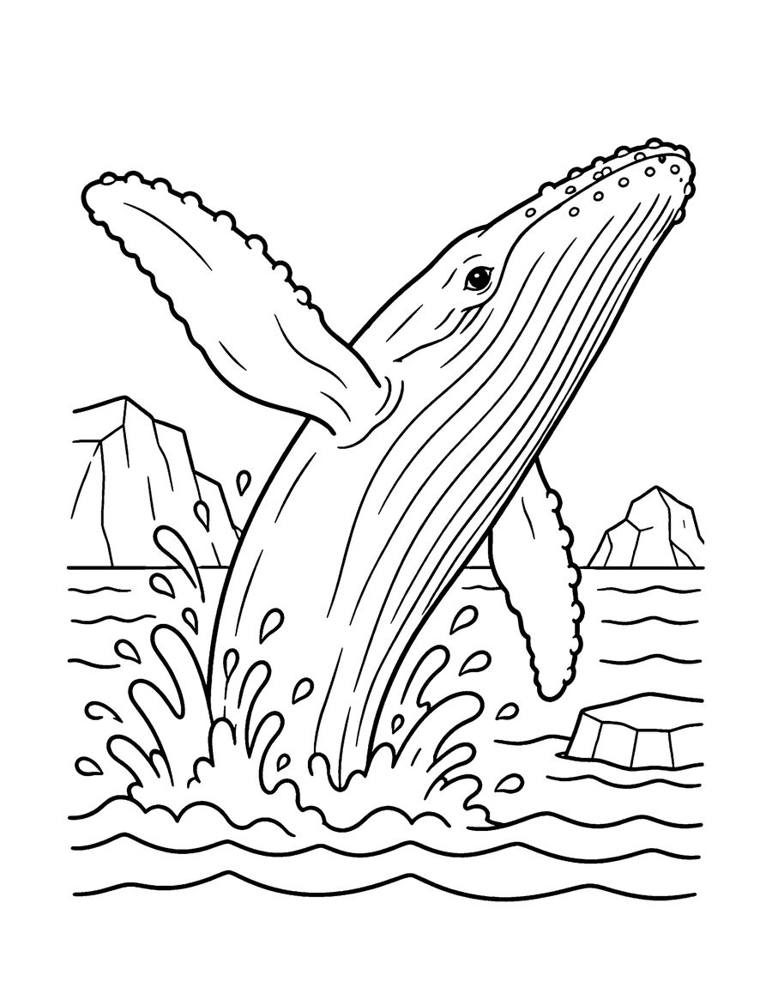
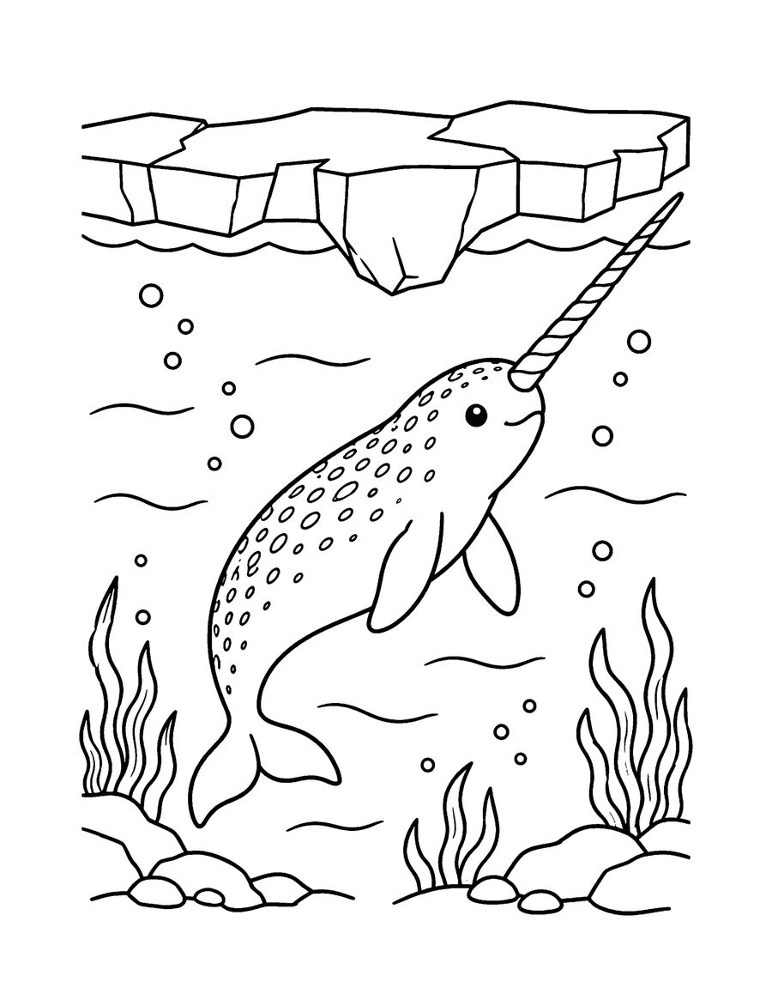
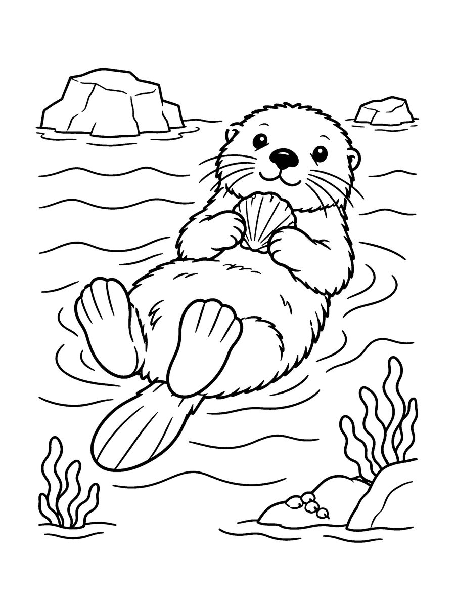

These free whale and sea otter coloring pages are bold and easy enough for a young child and relaxing enough for an adult. They come from Whales, Seals & Sea Otters, a coloring book of ocean mammals. The free set has a breaching humpback whale, a narwhal with its long tusk and a sea otter floating on its back.
Ocean mammals are a great topic because they breathe air like us even though they live in the sea. The narwhal's tusk is actually a very long tooth, and sea otters are known for floating on their backs and even holding paws while they rest. Use the pages for an ocean theme, a marine science lesson, or a family coloring evening where everyone works on the same animal. The lines are thick and the spaces are generous, so markers, crayons and colored pencils all work well. Print on US Letter paper at 100% scale. The full book has 40 pages with whales, seals, walruses, manatees and polar bears.
Your 3 free coloring pages

Narwhal
Download free page (PDF)
Sea Otter
Download free page (PDF)Printing tips
- Print at 100% scale on US Letter (8.5 x 11 in) paper. For A4, choose “Fit to page”.
- Use heavier paper (65 lb / 120 gsm or more) if you color with markers, so ink does not bleed through.
- Download the PDF first, then print from your PDF viewer for the sharpest lines.
Get all 40 pages
These 3 pages are a taste of Whales, Seals & Sea Otters (All ages). The full coloring book has 40 pages, ready to print or color in a book.
More free coloring pages

Free Dolphin Coloring Pages for Kids
Kids 6-12

Free Coral Reef Coloring Pages for Adults
Teens & adults

Free Arctic Animals Coloring Pages
Teens & adults

Free Prehistoric Sea Monster Coloring Pages
Kids 6-12